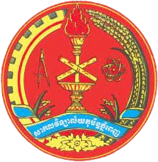

Introduce about The Royal University of Phnom Penh (RUPP)

The Royal University of Phnom Penh (RUPP), founded in 1960, has undergone a series of transformations to become the leading national university in Cambodia. Other transformations are still happening. In the last five years, for example, Rupp has made considerable progresses in many areas including organizational structure, institutional governance, capacity building, infrastructure development, research, teaching and learning, curriculum development, and quality assurance. These achievements have encouraged RUPP management and faculty to strive harder to implement the institutional reform and achieve development goals.
Looking towards the future, Rupp will grasp opportunities and assume a key role in driving Cambodia’s socio-economic development through the creation of human capital and the provision of quality research, training and community service. Rupp aspires to contribute to the achievement of the 2030 and 2050 national development goals of the Royal Government of Cambodia as well as the higher education vision of the Ministry of Education, Youth, and Sport.
Against this backdrop, this Strategic Plan 2019-2023 has been developed to guide Rupp in realizing its development vision and goals for the next five years. It will serve as a roadmap for the university to orient its focus and for its sub-units to devise their own action plans accordingly. The strategic plan will move Rupp closer to assuming its place among other national universities in the ASEAN region as a center for intellectual and cultural development.

- VISION
To be Cambodia’s flagship university with regional standing in teaching and learning, research and innovation, and social engagement.
- MISSION
To contribute to national, regional, and global sustainable development and the preservation of national cultural and natural heritage by:
- equipping our students with the essential knowledge, skills, values, and attitudes required by the information- and knowledge-based society;
- providing high quality research and innovation; and
- being actively engaged with society.
- History
The Royal University of Phnom Penh first opened its doors as the Royal Khmer University on January 13, 1960, with a National Institute of Judicial and Economic Studies, a Royal School of Medicine, a National School of Commerce, a National Pedagogical Institute, a Faculty of Letters and Human Sciences, and a Faculty of Science and Technology. The language of instruction during this period was French.
With the establishment of the Khmer Republic, the Royal Khmer University became the Phnom Penh University. Between 1965 and 1975 the university consisted of the Ecole Normale Supérieure, the Faculties of Letters and Humanities, Science, Pharmacy, Law and Economics, Medicine and Dentistry, Commerce, Pedagogy and the Language Institute.
Between 1975 and 1979, the Khmer Rouge regime forced the cessation of formal education. Schools and universities were closed and destroyed, and teaching services decimated. Along with all other educational institutions in Cambodia, Phnom Penh University ceased to function during this time. The Khmer Rouge targeted the educated, and many of the University’s faculty members were killed. Of the educated people who survived the regime, few chose to remain in Cambodia once its borders reopened. Deserted for almost five years, the campus became another victim of the grim period during the Pol Pot regime.
In 1980, the Ecole Normale Supérieure reopened, again teaching predominantly in French. The following year saw the opening of the Institute of Foreign Languages (IFL), initially training students to become Vietnamese and Russian language teachers. Both colleges focused on training students to become teachers, thus rebuilding the education system within Cambodia.
In 1988, the Ecole Normale Supérieure merged with the IFL to create Phnom Penh University. In 1996, the university underwent its final change of name, becoming the Royal University of Phnom Penh.
During the past decade, the University has continued to grow and now includes the Faculty of Science, Faculty of Social Sciences and Humanities, and the Institute of Foreign Languages. New departments and degree programs are developed regularly to keep up with the changing needs of Cambodian society. In keeping with its commitment to higher education, RUPP began to develop postgraduate degrees at a Masters level since 2001.